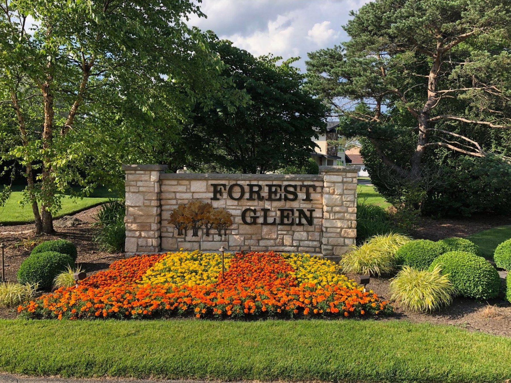
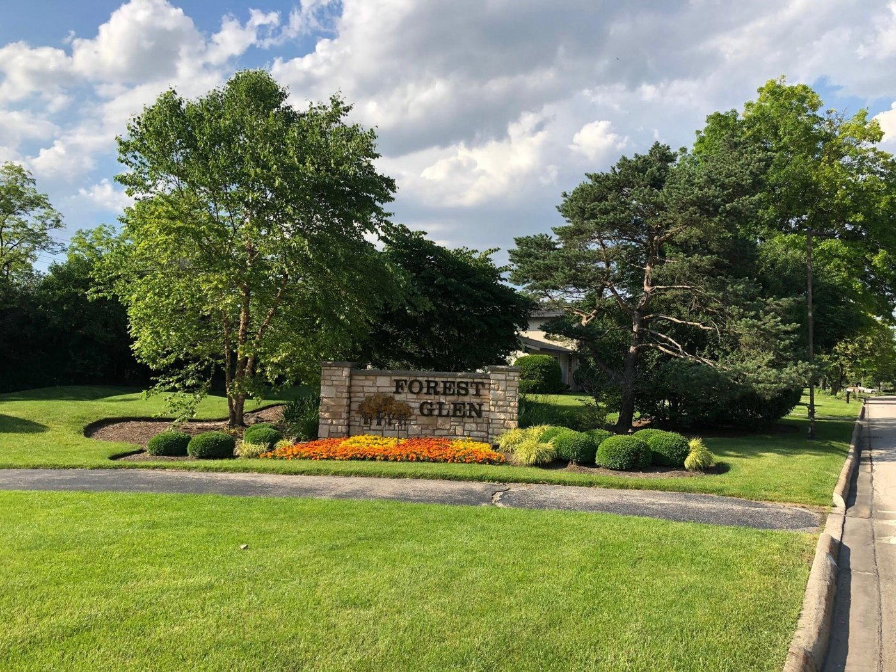

Forest Glen
A family community of custom homes, large yards, and winding tree-lined streets — with bike paths, parks, and playgrounds of our own.
Loading…
View full calendarWelcome to Forest Glen
Welcome to Forest Glen, a subdivision of Oak Brook — a family community that enjoys custom homes with large yards, winding tree-lined streets, bike paths, parks, playgrounds, and highly rated schools with excellent extracurricular programs.
Forest Glen, developed in the mid-1970s, has about 158 homes that are spread just enough to give the feeling of privacy but close enough to catch a chat with a friend. Many people find it by accident — others hear about it from friends who have homes in the subdivision and believe that this is one of the best places in Oak Brook to raise children.

One gate, every season
There are so many family-friendly things to enjoy. In the spring, residents come out to walk and ride their bikes down the winding, tree-filled streets. During the summer, children spend more time at the playgrounds, and the older ones can be seen playing basketball and tennis at our own Forest Glen Park. Fall brings the beautiful changing leaves, and winter is for sledding and winter sports nearby. For many, the favorite year-round activity is dog walking — everyone is out walking their favorite family member all the time. It’s a great way to meet new friends and see old ones.



A strong association, friendly traditions
With a strong homeowners association, Forest Glen continues to work to keep its natural beauty. The board works hard to protect its assets and make the community family friendly. The association is known for its community picnic as well as, most recently, our Halloween Children’s Haunted Walk — events that make for great afternoons spent with friends and neighbors.
Established
Mid-1970sDeclaration recorded July 1976
Homes
About 158Custom single-family homes
The Board
7 directorsNeighbors, serving as volunteers
Board meetings
2nd TuesdayOf every month — all welcome
Questions for the association?
We keep things simple here — no feeds to follow. Call or email any of our directors, or join us at a monthly board meeting.